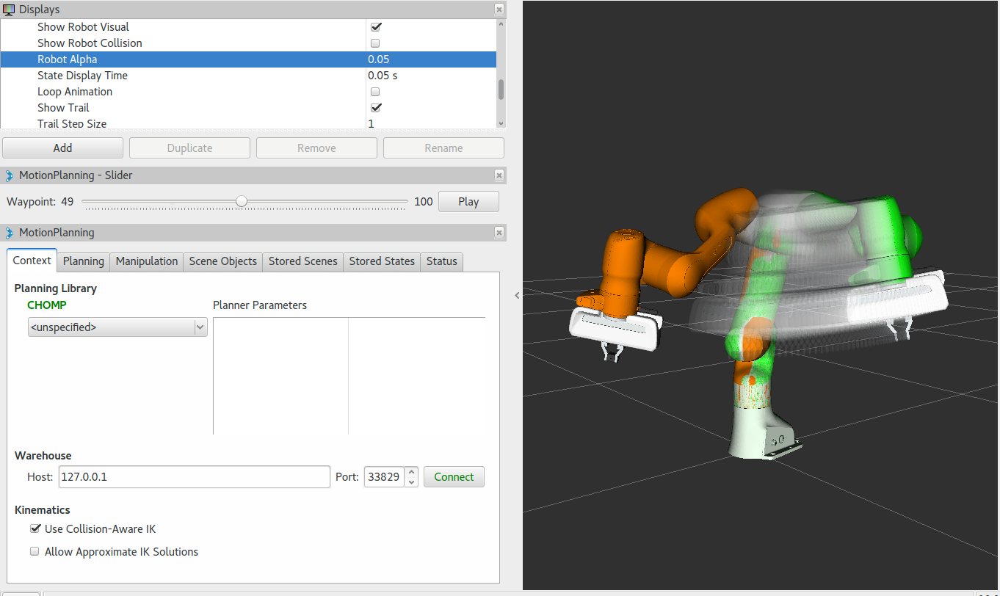

CHOMP Planner
{kind=link}
Covariant Hamiltonian optimization for motion planning (CHOMP) is a gradient-based trajectory optimization procedure that makes many everyday motion planning problems both simple and trainable (Ratliff et al., 2009c). While most high-dimensional motion planners separate trajectory generation into distinct planning and optimization stages, this algorithm capitalizes on covariant gradient and functional gradient approaches to the optimization stage to design a motion planning algorithm based entirely on trajectory optimization. Given an infeasible naive trajectory, CHOMP reacts to the surrounding environment to quickly pull the trajectory out of collision while simultaneously optimizing dynamical quantities such as joint velocities and accelerations. It rapidly converges to a smooth collision-free trajectory that can be executed efficiently on the robot. Integration into latest version of MoveIt is work in progress. More info
Getting Started
If you haven’t already done so, make sure you’ve completed the steps in Getting Started.
You should also have gone through the steps in Visualization with MoveIt RViz Plugin
Prerequisites
On ROS Melodic you do not need to build MoveIt from source, but for older versions of MoveIt you do (see previous tutorial versions).
To use CHOMP with your robot you must already have a MoveIt configuration package for your robot already. For example, if you have a Panda robot, it’s called
panda_moveit_config. This is typically configured using the MoveIt Setup Assistant.
Using CHOMP with Your Robot
Note: if you are following this demo using the panda_moveit_config from the ros-planning/panda_moveit_config repository, these steps are already done for you and you can skip this section.
Simply download chomp_planning_pipeline.launch.xml file into the launch directory of your MoveIt config package. In our case, we will save this file in the
panda_moveit_config/launchdirectory.Adjust the line
<rosparam command="load" file="$(find panda_moveit_config)/config/chomp_planning.yaml" />to<rosparam command="load" file="$(find <robot_moveit_config>)/config/chomp_planning.yaml" />replacing<robot_moveit_config>with the name of your MoveIt configuration package.Download chomp_planning.yaml file into the config directory of your MoveIt config package. In our case, we will save this file in the
panda_moveit_config/configdirectory.Open
chomp_planning.yamlin your favorite editor and changeanimate_endeffector_segment: "panda_rightfinger"to the appropriate link for your robot.
Running the Demo
If you have the panda_moveit_config from the ros-planning/panda_moveit_config repository you should be able to simply run the demo:
roslaunch panda_moveit_config demo.launch pipeline:=chomp
Running CHOMP with Obstacles in the Scene
To run CHOMP in an environment with obstacles, you can run the sample python script:
This script creates a cluttered scene with four obstacles or a simple scene with one obstacle depending on the argument given to the script. One can also change the position/size of the obstacles to change the scene.
To run the CHOMP planner with obstacles, open two shells. In the first shell start RViz and wait for everything to finish loading:
roslaunch panda_moveit_config demo.launch pipeline:=chomp
In the second shell, run either of the two commands:
rosrun moveit_tutorials collision_scene_example.py cluttered
or:
rosrun moveit_tutorials collision_scene_example.py sparse
Next, in RViz, select CHOMP in the MotionPlanning panel under the Context tab. Set the desired start and goal states by moving the end-effector around with the imarker and then click on the Plan button under the Planning tab in the MotionPlanning panel to start planning. The planner will now attempt to find a feasible solution between the given start and end position.
Tweaking some of the parameters for CHOMP
CHOMP has some optimization parameters associated with it. These can be modified for the given environment/robot you are working with and is normally present in the chomp_planning.yaml file in config folder of the robot you are working with. If this file does not exist for your robot, you can create it and set the parameter values as you want. The following are some of the insights to set up these parameter values for some of them:
planning_time_limit: the maximum time the optimizer can take to find a solution before terminating
max_iterations: this is the maximum number of iterations that the planner can take to find a good solution while optimization
max_iterations_after_collision_free: maximum iterations to be performed after a collision-free path is found.
smoothness_cost_weight: the smoothness_cost_weight parameters controls its weight in the final cost that CHOMP is actually optimizing over
obstacle_cost_weight: this controls the weight to be given to obstacles towards the final cost CHOMP optimizes over. e.g., 0.0 would have obstacles to be ignored, 1.0 would be a hard constraint
learning_rate: this is the learning rate used by the optimizer to find the local / global minima while reducing the total cost.
smoothness_cost_velocity, smoothness_cost_acceleration, smoothness_cost_jerk: variables associated with the cost in velocity, acceleration and jerk.
ridge_factor: the noise added to the diagonal of the total quadratic cost matrix in the objective function. Addition of small noise (e.g., 0.001) allows CHOMP to avoid obstacles at the cost of smoothness in trajectory.
use_pseudo_inverse: enable pseudo inverse calculations or not.
pseudo_inverse_ridge_factor: set the ridge factor if pseudo inverse is enabled.
joint_update_limit: set the update limit for the robot joints
collision_clearance: the minimum distance that needs to be maintained to avoid obstacles.
collision_threshold: the collision threshold cost that needs to be maintained to avoid collisions
use_stochastic_descent: set this to true/false if you want to use stochastic descent while optimizing the cost. In stochastic descent, a random point from the trajectory is used, rather than all the trajectory points. This is faster and guaranteed to converge, but it may take more iterations in the worst case.
enable failure recovery: if this is set to true, CHOMP tweaks certain parameters in the hope to find a solution when one does not exist with the default parameters specified in the
chomp_planning.yamlfile.max_recovery_attempts: this is the maximum times that CHOMP is run with a varied set of parameters after the first attempt with the default parameters.
trajectory_initializaiton_method: the type of initialization of the trajectory can be supplied here for CHOMP, this can be
quintic-spline,linear,cubicorfillTrajectory. The first three options refer to the interpolation methods used for trajectory initialization between start and goal states.fillTrajectoryprovides an option of initializing the trajectory from path computed from an existing motion planner like OMPL.
Choosing parameters for CHOMP requires some intuition that is informed by the planning environment. For instance, the default parameters for CHOMP work well in environments without obstacles; however, in environments with many obstacles the default parameters will likely cause CHOMP to get stuck in local minima. By tweaking parameters, we can improve the quality of plans generated by CHOMP.
Some of the unused/commented parameters are hmc_stochasticity, hmc_annealing_factor, hmc_discretization, use_hamiltonian_montecarlo, animate_endeffector, animate_endeffector_segment, animate_path, random_jump_amount, add_randomness.
Difference between plans obtained by CHOMP and OMPL
Optimizing planners optimize a cost function that may sometimes lead to surprising results: moving through a thin obstacle might be lower cost than a long, winding trajectory that avoids all collisions. In this section we make a distinction between paths obtained from CHOMP and contrast it to those obtained from OMPL.
OMPL is a open source library for sampling based / randomized motion planning algorithms. Sampling based algorithms are probabilistically complete: a solution would be eventually found if one exists, however non-existence of a solution cannot be reported. These algorithms are efficient and usually find a solution quickly. OMPL does not contain any code related to collision checking or visualization as the designers of OMPL did not want to tie it to a any particular collision checker or visualization front end. The library is designed so it can be easily integrated into systems that provide the additional components. MoveIt integrates directly with OMPL and uses the motion planners from OMPL as its default set of planners. The planners in OMPL are abstract; i.e. OMPL has no concept of a robot. Instead, MoveIt configures OMPL and provides the back-end for OMPL to work with problems in Robotics.
CHOMP: While most high-dimensional motion planners separate trajectory generation into distinct planning and optimization stages, CHOMP capitalizes on covariant gradient and functional gradient approaches to the optimization stage to design a motion planning algorithm based entirely on trajectory optimization. Given an infeasible naive trajectory, CHOMP reacts to the surrounding environment to quickly pull the trajectory out of collision while simultaneously optimizing dynamical quantities such as joint velocities and accelerations. It rapidly converges to a smooth collision-free trajectory that can be executed efficiently on the robot. A covariant update rule ensures that CHOMP quickly converges to a locally optimal trajectory.
For scenes containing obstacles, CHOMP often generates paths which do not prefer smooth trajectories by addition of some noise (ridge_factor) in the cost function for the dynamical quantities of the robot (like acceleration, velocity). CHOMP is able to avoid obstacles in most cases but it can fail if it gets stuck in the local minima due to a bad initial guess for the trajectory. OMPL can be used to generate collision-free seed trajectories for CHOMP to mitigate this issue.
Using CHOMP as a post-processor for OMPL
Here, it is demonstrated that CHOMP can also be used as a post-processing optimization technique for plans obtained by other planning algorithms. The intuition behind this is that some randomized planning algorithm produces an initial guess for CHOMP. CHOMP then takes this initial guess and further optimizes the trajectory. To achieve this, follow the steps:
Edit
ompl_planning.yamlin the<robot_moveit_config>/launchfolder of your robot. Addchomp/OptimizerAdapterto the bottom of the list of request_adapters:request_adapters: >- ... default_planner_request_adapters/FixStartStatePathConstraints chomp/OptimizerAdapter
Add a new yaml configuration file for chomp (or update the existing one),
chomp_planning.yaml. Note the last line – thefillTrajectorymethod means that OMPL will provide the input for the CHOMP algorithm:start_state_max_bounds_error: 0.1 planning_time_limit: 10.0 max_iterations: 200 max_iterations_after_collision_free: 5 smoothness_cost_weight: 0.1 obstacle_cost_weight: 1.0 learning_rate: 0.01 animate_path: true add_randomness: false smoothness_cost_velocity: 0.0 smoothness_cost_acceleration: 1.0 smoothness_cost_jerk: 0.0 hmc_discretization: 0.01 hmc_stochasticity: 0.01 hmc_annealing_factor: 0.99 use_hamiltonian_monte_carlo: false ridge_factor: 0.0 use_pseudo_inverse: false pseudo_inverse_ridge_factor: 1e-4 animate_endeffector: false joint_update_limit: 0.1 collision_clearance: 0.2 collision_threshold: 0.07 random_jump_amount: 1.0 use_stochastic_descent: true enable_failure_recovery: false max_recovery_attempts: 5 # OMPL initializes the trajectory: trajectory_initialization_method: "fillTrajectory"
Add the CHOMP config file to the launch file of your robot,
<robot_moveit_config>/launch/demo.launch.py, if it is not already:.planning_pipelines("ompl", ["ompl", "chomp"])
Now you can launch the newly configured planning pipeline as follows:
ros2 launch moveit_resources_panda_moveit_config demo.launch.py
This will launch RViz. Select OMPL in the Motion Planning panel under the Context tab. Set the desired start and goal states by moving the end-effector around in the same way as was done for CHOMP above. Finally click on the Plan button to start planning. The planner will now first run OMPL, then run CHOMP on OMPL’s output to produce an optimized path.